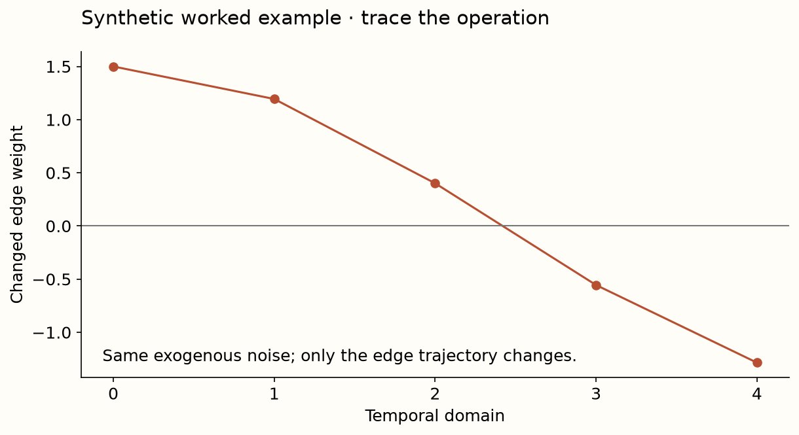
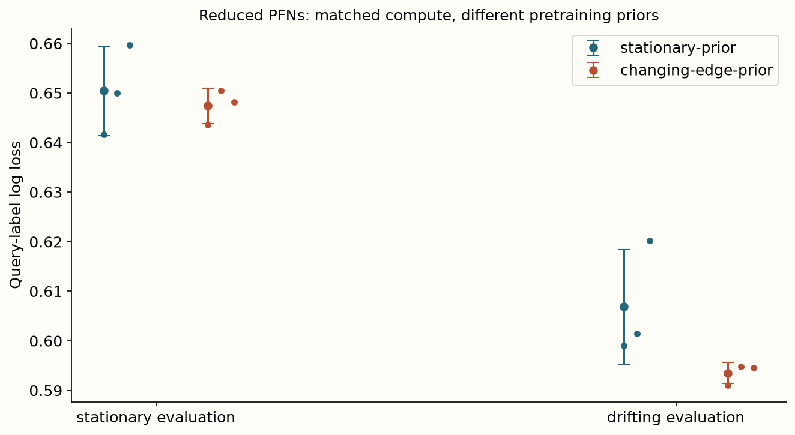

Year 2 · Quarter 3 · Lesson 068
Teach a PFN about changing mechanisms
Understand the computation. Challenge the evidence. Produce a defensible result.
Core reading: 35–50 minutes. Lab: 45–75 minutes plus declared experiment time. This sequence builds the strong single-table baseline and information discipline required to test the relational thesis.
Retrieve before reading
Without notes: Is an earlier event sufficient for using its label as context? Explain why, then recall a related failure mode from an older lesson.
A later row is a different evaluation question¶
Your goal is to distinguish a time-dependent task prior from merely attaching a timestamp to stationary data. Read Helli et al., Section 3 and Algorithm 1. Drift-Resilient TabPFN changes the synthetic pretraining distribution so that generating mechanisms can vary across temporal domains. It aims to learn how context informs predictions under those changes; it does not guarantee robustness to every possible future event.
For features X, target Y and domain/time T, covariate shift changes the distribution of X while preserving the conditional target rule P(Y|X). Label/prior shift changes class proportions while preserving P(X|Y). Concept shift changes the target relationship itself. These are idealized assumptions used to define tests. Observing a changed marginal distribution does not identify which assumption holds, and stable marginals do not prove a stable target rule.
Model architecture: a generator of changing generators¶
The paper starts with a base SCM whose graph determines relationships among variables. It chooses a sparse subset of edges to change over temporal domains. A second randomly sampled SCM maps domain information to the changing edge parameters. The base SCM then generates feature/target rows for each domain. Those tasks pretrain a PFN, which later conditions on historical labeled context and query-domain information.
The second-order SCM is a data generator, not a learned forecast of the true deployment graph. No gradient is needed to sample its edge trajectories. Neural optimization trains the PFN on the resulting tasks. Distinguish this pretraining-only path from inference: the deployed PFN is not given the true generating graph or future target labels.
- SECOND-ORDER PRIORsample function of time → edge weightspretraining generator; no learned optimizer here
- BASE SCMchanging edges + exogenous noisesample context and later query domains
- PFN PRETRAINING[features,time] + historical labelsquery loss changes model weights
- INFERENCEeligible historical context + future queryno true generating graph supplied
- LOCAL ABLATIONstationary versus changing-edge RowPFNmatched steps; paper model NOT_REPRODUCED
Our narrow mirror uses a random function w(t)=a+c*tanh(b*t+d) to change one causal edge. The four coefficients are sampled once per task. A feature value x produces a binary target with probability sigmoid(w(t)*x). Context times lie between 0 and .6; query times lie between .6 and 1. A two-layer RowPFN observes [x,t] and historical context labels. This is a complete controlled prior ablation, not the paper's released architecture or full second-order-SCM distribution.
Make a mechanism change visible¶
The first visual holds exogenous noise fixed while changing one edge across five domains. Follow the cause through the edge weight and nonlinear target mechanism. Correlation may reverse as the edge changes sign. The source of change is known because we generated it; a plot of real correlations would not identify causation by itself.

The next experiment pretrains identical reduced PFNs under two priors: a stationary edge and a sampled changing edge. Architecture, initialization seeds, optimizer, number of steps and task counts are matched. Evaluate both on the same 200 unseen stationary tasks and the same 200 unseen drifting tasks. Query-label losses are averaged within tasks first. Model seeds are repeated fits; the shared evaluation tasks are paired observations, not extra independently trained models.
Predict whether the changing-edge prior must win on both evaluation conditions. It need not. It can spend finite capacity on variation irrelevant to stationary tasks; neither reduced model may learn the intended extrapolation within the small budget. A failed improvement is an informative result about this training setup, not evidence that the paper's larger method fails.

Measured interpretation. The changing-edge prior lowers mean loss on the matched drifting task collection in this reduced experiment. Its stationary-task result must be inspected separately. The figure shows three model seeds; the 200 shared tasks are paired evaluation cases, not independent pretrained models. The full published temporal model and benchmark remain unrun.
Inspect the numerical evidence table
| mean | std | ||
|---|---|---|---|
| arm | condition | ||
| changing-edge-prior | drifting | 0.5935 | 0.0021 |
| stationary | 0.6474 | 0.0035 | |
| stationary-prior | drifting | 0.6069 | 0.0116 |
| stationary | 0.6504 | 0.0091 |
Two clocks govern context eligibility¶
An event can occur before a prediction while its label arrives afterward. To include a row as labeled context at cutoff c, require both event_time≤c and label_available_time≤c. The equality convention must match the deployment contract. For event times [1,2,3], label times [2,8,4] and cutoff 4, rows 0 and 2 are eligible; row 1 is not, despite occurring earlier.
The time widget changes label delay while keeping event times and cutoff fixed. Watch the context shrink, then explain why a recent-window policy must apply eligibility before selecting the most recent k rows. Sorting by event time and taking k can otherwise retrieve labels that were unavailable at prediction time. Learned preprocessing, adaptation steps and feature availability require analogous point-in-time checks.
Separate adaptation from evaluation redesign¶
A stationary global model, a recent-history model, a time-conditioned PFN and a gradient-adapted PFN answer different questions. Give each a declared context policy and tuning budget. Choose window lengths and adaptation settings using earlier validation domains; evaluate later domains after the choice is frozen. Repeatedly selecting on the future test window turns a temporal benchmark into an adaptive validation loop.
The lesson-60 TabReD results provide real temporal evidence under their recorded release protocol. The synthetic changing-edge experiment provides mechanism isolation. Do not combine their numbers into one rank table or claim that a synthetic sign reversal explains a particular enterprise dataset's drift. They are complementary evidence with different targets.
Exit: diagnose a shift you can falsify¶
Submit the sampled edge trajectories, temporal episode boundaries, eligibility checks and paired stationary/drifting losses. Explain what changed in the prior and what stayed fixed in the learner. Name an out-of-prior shift that could still defeat the model—for example, a discontinuous rule change not represented by its smooth mechanism generator.
For a real task, write the three-clock contract: event time, feature availability and label availability. Propose a chronological validation/test design and one fixed baseline. Your verdict must keep the paper claim, the reduced PFN experiment and the real TabReD comparison distinct.
Run the companion lab
What you will do: Implement label-availability checks and a changing-mechanism task generator; train a short temporal PFN exercise.
temporal_eligible: Require both event and label availability by the inclusive cutoff.temporal_tasks: Sample task-specific time-to-edge mechanisms, then earlier context and later queries sharing that mechanism.
Author-reference evidence: Matched stationary-prior versus changing-edge-prior PFNs, trained for 400 steps across three seeds.
Submit: your completed notebook and student-l068-exit.json, plus your written interpretation. CHECK cells give immediate code feedback; paste the EXIT output here for a reasoning review.
Student notebook · Prepared lab · Open in Colab
2 substantive code tasks feed the live experiment, followed by behavioral CHECKs and a written EXIT artifact. The notebook contains the explanation and portable figures so it is teachable independently.
Ask me follow-up questions about any operation, CHECK or conclusion you cannot defend. Paste the EXIT artifact and your explanation for review. Revisit the retrieval question tomorrow and again in a week, before reopening the reference.